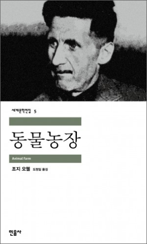

동물농장
- 원제
- Nineteen Eighty-Four
- 글
- 조지 오웰
- 옮김
- 정회성
- 출판사
- 민음사
- 발행일
- 2003년 6월 16일
- 시리즈
- 세계문학전집 77
- 분야
- 세계문학전집 77
20세기 영미 문학의 가장 중요한 작가 조지 오웰
정치권력을 부패시키는 근본적 위험과 모순에 대한 빼어난 우화
문학의 사회 비판적 역할에 대한 고민이 담긴 위대한 풍자소설
“모든 동물은 평등하다. 그러나 어떤 동물은 다른 동물들보다 더 평등하다.”
우화 형식으로 당대의 정치적 현실을 날카롭게 묘파한 『동물농장』은 『1984』, 『카탈로니아 찬가』와 함께 조지 오웰이 47세의 나이로 갑작스레 사망하기 전 짧은 작가 생활 동안
남긴 영국 문학의 위대한 결실이다. 이 작품이 영국에서 처음 출간된 것은 2차 세계 대전이 갓 끝난 1945년이었다. 소련과 사회주의에 민감하던 세계 정치적 분위기에서 이 작품은
처음엔 거의 모든 출판사에서 출판을 거절할 정도로 홀대받았으나, 그의 전작『카탈로니아 찬가』를 출간했던 섹커 앤드 와버그 출판사의 결정으로 겨우 출간에 이를 수 있었다. 사실상
전시(戰時)나 다름없던 무렵『동물농장』은 출간되자마자 초판 4500부가 매진되고 재쇄를 거듭한 끝에 영국과 미국 모두에서 베스트셀러가 되었다. 그 이후 70여 년이 훌쩍 지난
지금까지 『동물농장』의 판매량은 세계적으로 1천만 부 이상을 넘은 것으로 알려져 있다.
조지 오웰은 『동물농장』에서 인간의 속박에서 벗어나 혁명을 이루고 이상 사회를 건설한 동물 공동체가 변질되는 모습을 통해 구소련의 역사를 재현하며 스탈린 독재 체제를 강도 높게
비판한다. 작중 여러 등장인물 중 인간 주인인 존즈는 러시아 황제 니콜라스 2세를, 혁명을 호소하는 늙은 메이저는 마르크스를, 독재자 나폴레옹은 스탈린을, 나폴레옹에게 축출당하는
스노볼은 트로츠키를 상징한다. 또한 이야기 속에 등장하는 ‘동물학살’과 ‘외양간 전투’ 역시 각기 스탈린 시대의 대숙청과 연합군 침공 등으로 연결된다. 혁명이 성공한 후에 어떻게
변질되고, 권력을 잡은 지도자들이 어떻게 국민을 속이고 핍박하는지를 면밀히 그린 이 우화는 특정한 시대에만 한정되어 읽히지 않는다. 이 작품은 인류가 사회를 이루고 살 때부터
벌어진 ‘독재’를 함축적인 등장인물과 사건을 통해 그려내어 지금까지도 유효한 풍자를 담고 있으며, 그렇기에 조지 오웰이 지닌 사회비판적 문학의 역량이 여실히 드러나는 작품이다.
* 이상 사회의 탄생과 부패의 과정
역사적 정치풍자라는 관점에서 보았을 때 『동물농장』은 1917년 볼셰비키 혁명 이후 스탈린 시대에 이르기까지 소련에서의 정치 상황을 대상으로 하고 있다. 니콜라스 2세의
차르
정권을 뒤엎고 권력을 장악한 볼셰비키 혁명은 이른바 역사상 최초의 사회주의 혁명이다. 볼셰비키는 착취 계급의 제거를 통한 평등의 실현, 프롤레타리아트에 의한 지배,
생산수단의
공유화, 상속제 폐지, 중앙기획경제 등 사회조직과 운영의 모든 층위에서 서유럽 국가들의 제도와는 근본적으로 다른 새로운 사회 건설을 목표를 내걸고 출발했는데, 이것의 성공적
실현
여부는 20세기 전반 유럽인들에게 초미의 관심사가 아닐 수 없었다. 이 유럽인들의 『동물농장』의 일차적 독자였으며, 이 책이 나왔을 당시 등장인물과 사건이 각기 실제로는
누구인지
판별하는 일이 어렵지 않았다.
그러나 이 작품이 소비에트가 소멸하고 없는 현대의 독자들, 특히 스탈린 시대의 정치현실을 경험으로써가 아니라 역사 기록과 증언들을 통해서만 접할 수 있는 현대 독자들에게
신선한
충격을 던지지 않는 것은 아니다. 이 작품은 기본적으로 우화이며, 우화 장르는 다른 어떤 서사 장르보다도 더 효과적으로 알레고리라는 수사 장치를 활용할 수 있기 때문에
또다른
시공간에서도 의미의 효력을 잃지 않는다. 부패한 독재자는 어느 시대에도 있을 수 있고, 권력형 돼지들도 어느 시대에나 있다. 소비에트 체제가 무너진 현 시대에도, 또
앞으로도
『동물농장』이 강한 적절성과 호소력을 가질 수 있는 이유는 그것이 인간 정치사회의 권력 현실을 부패시키는 근본적 위험과 모순에 대한 항구한 알레고리를 담고 있는 덕분이다.
* 조지 오웰의 문학적 목표와 신념이 고스란히 담긴 작품
오웰이 『동물농장』에서 말하고자 한 바는, 권력 자체만을 목표로 하는 혁명은 주인만 바꾸는 것으로 끝날 뿐 본질적 사회변화를 가져오지는 못한다는 것, 대중이 살아 깨어
있으면서 지도자들을 감시 비판하고 질타할 수 있을 때에만 혁명은 성공한다는 것이다. 여기서 분명해지는 것은, 그의 작품과 에세이 전반에서 그가 천착한 문제가 사회주의 혁명
그 자체가 아니라는 것이다. 그의 관심사는 ‘혁명의 배반’, 즉 실패한 혁명과 부패한 혁명에 있었다. 『카탈로니아 찬가』에서 스페인 내전 참여 과정에서 겪은 경험을 고스란히
담아낸 그는, 사회주의의 부패에 대해 『동물농장』과 『1984』에서 더 깊이 있게 나아간다. 인간의 모든 혁명은 반드시 처음의 약속을 배반하게 되는가? 모든 혁명의 성과는
권력을 장악한 지배 엘리트 계층의 손에 장악되는가? 권력의 타락은 인간 사회의 불가피한 조건인가? 이러한 질문들에서 시작한 오웰의 태도는 단지 비관론에서 그치지 않고 권력의
타락을 막기 위해 무엇이 필요한가에 대한 통찰 역시 담고 있다. 작가생활 내내 소설뿐만 아니라 에세이, 평문 등 여러 형태의 글을 통해 자신의 사회 비판적 시선을 담아낸
조지 오웰은 다른 작품에서와 달리 『동물농장』에서 쉽고 명징한 문체, 뛰어난 블랙유머가 가능한 우화 형식에 자신의 입장을 접목하여 영국의 풍자문학 전통에 새로운 차원을 열어
주었다.